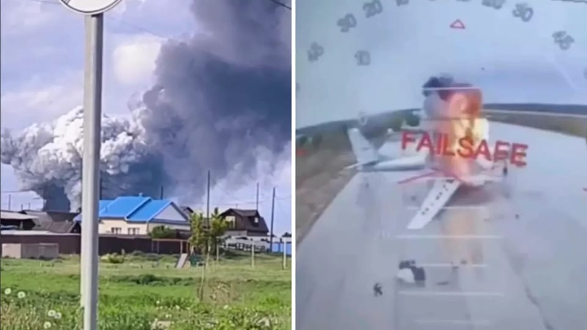

世界苦茶06月02日新闻 | 32条 | 乌无人机据称消灭俄1/3战略轰炸机

乌无人机据称消灭俄1/3战略轰炸机 | 俄罗斯接连两日桥梁炸毁 | 波兰保守派夺得总统大选 | 普京九月访华
每天三件事：
苦茶数据
美元兑人民币：7.21（昨日7.20，前日7.20）
美元兑日元：143.47（昨日144.28，前日143.99）
上证指数：休市（昨日3347，前日3355）
标普500指数：休市（昨日5911，前日5912）
比特币：104928（昨日103971，前日103740）
布伦特原油：64.27（昨日62.78，前日63.90）
中国新闻
• 港促拓展全球南方合作 ：香港财政司司长陈茂波说，亚细安及中东国家政局稳定，香港正积极加强与这些全球南方国家的经贸往来。陈茂波星期天在网志撰文指出，近年来香港与全球南方国家的经贸联系日益紧密。上周在港举行的第二届“香港—沙特资本市场论坛”便是一例，会上首只伊斯兰债券交易所买卖基金在港上市，这也是亚洲首只追踪沙特政府发行伊斯兰债券的ETF产品。他说，除了金融领域，过去两年多来，香港与全球南方国家在贸易、投资、创新科技、数字经济、法律、教育及旅游等方面的交流与合作也在不断深化。
• 周霁赴港调研履新 ：香港中联办主任周霁到任后首次落区调研，他称深知责重如山，会全面准确、坚定不移贯彻“一国两制”方针。据《星岛日报》报道，周霁星期天到九龙妇女联会富昌服务中心、新界葵青青衣长亨邨社区会堂调研。周霁说，在港澳办工作期间，亲眼目睹香港步入由治及兴新阶段，前景越来越广阔。他称有幸到香港中联办工作，是中共总书记习近平、党中央对他的高度信任，深知“责重如山”，会全面准确、坚定不移贯彻“一国两制”方针，落实爱国者治港原则，坚决维护宪法和基本法确定的特别行政区宪制秩序，坚决维护国家主权、安全、发展利益。
• 台陆委会批旺中统战 ：台湾的大陆委员会指出，旺中集团代表在海峡两岸中华文化峰会发表附和中共对台统战宣传作为，严重危害台湾利益，并强调将检视该行为是否涉及和中共党政军合作而有违反两岸条例的情况，依法处理。陆委会星期天在官网发布新闻稿称，对于旺中集团代表于中共官方所举办的中华文化峰会中发表附和中共对台统战宣传作为，该委员会批评，旺中集团为求在中国大陆发展利益，协助中共办理具统战意涵之海峡两岸中华文化峰会，严重危害台湾利益。陆委会称，中共长期利用两岸交流场合包装对台统战宣意图，陆委会过去已提醒海峡两岸中华文化峰会等以媒体与文化交流为名，把台湾媒体人、文化人叫到北京训话、指导作为，已非单纯文教交流性质，非台湾政府乐见。
• 韩军发现中方浮标 ：韩国媒体报道，韩国海军2023年在西部海域发现中国设置的三个大型浮标。韩联社报道，据韩军星期六消息，韩国海军曾于2023年5月在西部海域的离於岛以西东经123度附近海上，发现中国设置的三个大型浮标。据悉，该浮标设置地点为属于中国专属经济区的公海。中国从2018年起在黄海韩中暂定措施水域一带，以海洋观测为目的设置10个宽三米、高六米的浮标。加上上述三个，中国共设置了13个浮标。其中一个设置在暂定措施水域内。
• 研究生扩招七年增68% ：数据显示，七年来中国研究生的招生增幅达到68.3%。据第一财经报道，根据高等教育数据与内容服务商青塔今年2月的统计，在纳入统计的101所双一流高校中，至少有12所“双一流”高校的2024届本科毕业生深造率超过了七成，本科生深造率超过50%则有46所高校。这意味着，有超过四成的双一流高校本科毕业生深造率过半。
• 美国哈佛大学日前举行毕业礼，来自肯尼迪学院的公共管理硕士蒋雨融作为学生代表致辞，在中文网络引发热议： 蒋雨融上周四在哈佛大学毕业典礼上代表毕业生演讲。美国媒体认为其演讲虽未提及美国总统特朗普，但实际上是反驳禁令。据山东省委机关报《大众日报》报道，来自青岛的蒋雨融在微信发帖称，获选在毕业礼发言感到骄傲，“会继续为身边的人、远方的人、无数没有条件来到这里的人们去发声和做事”。据《哈佛校报》，蒋雨融高中前往英国卡迪夫升学，本科在美国杜克大学修读经济，毕业后辗转于瑞士信贷等金融机构工作。中国生物多样性保护与绿色发展基金会（中国科协主管）2022年曾发文称，蒋雨融作为志愿者长期活跃，获秘书长周晋峰推荐入读哈佛。蒋父曾是绿发会专项基金执行主任，绿发会近日删除相关帖文。
亚太印太新闻
• 印航空再购30架A350 ：印度最大航空公司靛蓝航空增购30架空中客车A350-900型客机，使得这家廉价航空购买的这款客机数量增至60架，进一步扩充机队规模，提升国际航线运力。印度靛蓝航空公司星期天宣布，已行使选择权，签署了增购30架空客A350-900型客机的订单。靛蓝航空发声明说：“这一战略举措将使靛蓝航空进一步拓展远程国际航线网络。这是公司在制定长期国际扩张计划方面迈出的又一步。”
• 印81人因挺巴被捕 ：印度阿萨姆邦首席部长萨尔玛星期天说，阿萨姆邦有81人因“同情”巴基斯坦而被逮捕。萨尔玛在一份声明中说，印度当局一直在追踪社交媒体上反国家的帖子，并采取相关行动。他没有说明被捕者犯下的具体罪行，但法新社引述当地警方报道，其中一人是在Instagram上发布巴基斯坦国旗图样后被扣留。自4月22日印控克什米尔地区发生针对游客的袭击事件以来，印度当局呼吁加大了对社交媒体的审查力度。印度称，干下这起袭击的武装分子得到巴基斯坦的支持，但巴基斯坦否认。
• 国民党力挺徐巧芯 ：台湾在野的国民党立委罗智强称，党内立委徐巧芯是在野阵营最具战力的新生代代表，若她被罢免成功，将对在野阵营造成严重打击。罗智强星期天在脸书发文说，他所主导启动的“反恶罢台湾战车队”首辆战车将于星期一赴台北市松山信义区上阵，为徐巧芯助阵。他说，徐巧芯因直言敢言、积极监督政府，成为执政阵营重点打击的“头号战犯”。虽然他本人也面临罢免压力，但始终坚持“一席都不能少”，强调这场战役不是某一个人的战斗，而是在野监督力量的一场捍卫战。
• 韩候选人黄教安退选 ：韩国无党籍总统候选人黄教安宣布退选，支持执政国民力量党候选人金文洙。韩国第21届总统选举投票日将于下星期二（6月3日）登场。韩联社报道，黄教安星期天在视频网站YouTube发布视频，宣布放弃总统候选人资格，全力以赴帮助金文洙竞选。黄教安说，他肩负的最后一项使命是防范选举舞弊，而金文洙曾承诺防治舞弊行为。
• 缅延长地震停火协议 ：缅甸军政府再次延长3月大地震后的临时停火协议，以便进行灾后重建工作。法新社报道，缅甸军政府新闻小组星期六发表声明说，临时停火将延长至6月30日，以促进地震灾区的恢复重建工作。原定的临时停火截止日期为5月31日。缅甸中部实皆省3月底发生强烈地震，造成将近3800人死亡，数万人无家可归。
科技新闻
• 美拟扩大对中科技限制 ：美国政府计划出台新规扩大对中国科技行业的限制，把受制裁企业的子公司也纳入管制。知情人士说，美国官方正在起草一项规则，要求与受制裁企业控股的公司进行交易，必须获得政府许可。在美国遏制中国技术崛起的行动中，中国一些最大的半导体设计和制造公司已被美方纳入所谓的“实体清单”，遭到美方制裁。新政策的目标则在于防止这些企业通过设立新子公司来规避限制措施。
财经新闻
• 中国商务部就美国指责中国违反《中美日内瓦经贸会谈联合声明》进行反驳： 中国按照共识，取消或暂停相关关税和非关税措施；美国则在会谈后陆续新增出台多项对华歧视性限制措施，包括发布AI芯片出口管制指南、停止对华芯片设计软件销售、宣布撤销中国留学生签证等。发言人称，美国的做法严重破坏既有共识，严重损害中方正当权益。中国坚决拒绝美国对中国违反共识的无理指责，要求美国立即纠正错误做法。如美国一意孤行，继续损害中国利益，中国将继续坚决采取有力措施，维护自身正当权益。
• 以旧换新破万亿销售 ：截至目前，中国今年消费品以旧换新销售额已突破1万亿元人民币。据中国央视新闻报道，记者星期天从中国商务部了解到，今年以来，消费品以旧换新有力带动消费持续回升向好。商务部数据显示，截至5月31日，今年消费品以旧换新五大品类合计带动销售额1.1万亿元，发放直达消费者的补贴约1.75亿份。
• 中国新房价继续结构性涨 ：数据显示，5月中国主要城市依然延续新房价格结构性上涨的趋势。据中新社报道，中指研究院星期天发布的数据显示，5月中国100个城市新建住宅平均价格为每平方米1万6815元人民币，环比上涨0.30%，同比上涨2.56%。100个城市二手住宅平均价格为每平方米1万3794元，环比下跌0.71%，同比下跌7.24%。一二线城市新房价格环比微涨。一线城市新建住宅价格环比上涨0.90%，二线城市环比上涨0.06%，三四线代表城市环比下跌0.11%。
• 日美拟G7前贸易会晤 ：日本媒体报道，日本首相石破茂考虑在6月七国集团峰会之前访问华盛顿，与美国总统特朗普会晤，以寻求达成贸易协议。路透社引述日本《读卖新闻》星期天报道，据日本政府官员透露，日本首席关税谈判代表赤泽亮正多次访问华盛顿后，日本官员看到了在降低特朗政府关税方面取得进展的迹象，称美方对日本的提议表现出浓厚兴趣。赤泽亮正近日会到华盛顿进行更多会谈，之后日本方面将就石破茂的美国之行作出决定。
• 中官媒批新能源价格战 ：中国工信部和汽车工业协会齐声表态反对无序价格战，中共中央机关报《人民日报》评论称，车企须坚守长期主义发展理念，决不能打价格战兴奋剂。《人民日报》星期天发表评论指出，中国制造在许多领域之所以能从跟跑实现领跑，最主要靠的不是低价，而是创新。文章称，今天的中国制造，正处于从价格导向到价值导向跃升的关键阶段。 眼下，新能源汽车产业发展一日千里，各国车企也在加大投入研发新技术新产品，中国车企尽管颇有优势，但远没有到大幅领先、高枕无忧的境地。
• 中国制造业连续收缩 ：尽管中美关税战暂停，但中国制造业活动5月继续萎缩，经济形势仍面临不确定性。中国国家统计局星期六公布的数据显示，5月制造业采购经理指数为49.5，较4月的49略有上升，但已连续第二个月低于50的荣枯线，显示制造业整体仍处于收缩区间。涵盖服务业和建筑业活动的非制造业商务活动指数为50.3，略低于4月的50.4。综合PMI产出指数为50.4，比上月上升0.2。
• 美财长称绝不违约 ：美国财政部长贝森特说，美国永远不会出现债务违约。路透社和彭博社报道，贝森特星期天接受哥伦比亚广播公司（CBS）《面向全国》节目采访时说：“美国永远不会违约。这永远不会发生。我们正处于警戒线上，永远不会碰壁。”贝森特敦促国会在7月中旬之前提高联邦政府的债务上限，以避免出现可能扰乱全球市场的违约事件。
俄乌战争
• 乌无人机炸俄41架军机 ：乌克兰国家安全局6月1日称，乌克兰利用无人机摧毁了俄罗斯境内4个空军基地的41架飞机。袭击目标包括伊尔库茨克州距乌4500公里的别拉亚基地、梁赞州距乌520公里的佳吉列沃基地、摩尔曼斯克州距乌2000多公里的奥列尼亚基地、伊万诺沃州距乌800多公里的伊万诺沃基地。受损战机包括图-95、图-22M等战略轰炸机以及A-50等侦察机。消息人士称，乌克兰将无人机藏在木质移动房屋的屋顶下，由卡车运输至俄罗斯境内。在俄罗斯境内远程打开屋顶并发射无人机。预计俄罗斯的损失超过20亿美元。相关人员已返回乌克兰。消息来源提供了袭击的视频片段，视频中几架疑似为图-95的大型飞机起火。俄罗斯国防部证实袭击，称在伊尔库茨克州和摩尔曼斯克州，从机场附近发射的无人机导致多架飞机起火。随后大火被扑灭，无人员伤亡，有参与袭击者被拘。俄罗斯在阿穆尔州、伊万诺沃州和梁赞州击退了袭击。俄罗斯6月1日向乌克兰发射了472架无人机和7枚导弹。俄罗斯对一个陆军训练部队的导弹袭击造成至少12名乌克兰军人死亡、60多人受伤。
• 俄罗斯连发两起桥梁坍塌事件，俄侦查委员会说，两起事件均为爆炸所致，并将事件定性为恐怖袭击： 俄罗斯政界人士认为两起事件与乌克兰有关，表示这是旨在破坏双方谈判的行为。乌克兰方面尚未做出相关回应。乌克兰国防部情报总局称，5月31日晚，一列驶往克里米亚方向的俄军列车在扎波罗热州梅利托波尔区被炸毁。爆炸导致油罐车厢和货柜车厢脱轨，俄军“从扎波罗热州至克里米亚的关键物流通道被切断”。乌国防部情报总局强调，乌方针对俄军的后勤运输线的打击将继续。
• 泽连斯基确认赴谈判立场 ：乌克兰总统泽连斯基确认，乌克兰代表团将参加6月2日在伊斯坦布尔举行的第二轮俄乌谈判。乌克兰代表团将由国防部长乌梅罗夫率领。泽连斯基称，谈判立场包括：全面且无条件停火、释放战俘、归还被绑架的儿童。此外，为了建立可靠且持久的和平并保障安全，需要准备最高级别的会晤，关键问题只能由领导人解决。俄罗斯外长拉夫罗夫称，莫斯科已为谈判准备了一份备忘录，阐述了其对“彻底解决危机根源的所有方面的立场”。 （翻评：乌克兰在谈判前给俄罗斯的压力有点大啊。）
• 俄两桥爆炸被定恐袭 ：俄罗斯连发两起桥梁坍塌事件，俄侦查委员会说，两起事件均为爆炸所致，并将事件定性为恐怖袭击。俄罗斯政界人士认为两起事件与乌克兰有关，表示这是旨在破坏双方谈判的行为。乌克兰方面尚未做出相关回应。乌克兰国防部情报总局称，5月31日晚，一列驶往克里米亚方向的俄军列车在扎波罗热州梅利托波尔区被炸毁。爆炸导致油罐车厢和货柜车厢脱轨，俄军“从扎波罗热州至克里米亚的关键物流通道被切断”。乌国防部情报总局强调，乌方针对俄军的后勤运输线的打击将继续。
• 普京9月访华将会谈 ：俄罗斯外交部副部长鲁坚科说，俄中两国正在制定两国领导人双边会谈计划，该会谈将在俄罗斯总统普京9月访华期间举行。据俄罗斯卫星通讯社中文网星期六晚报道，鲁坚科在北京举行的第十届“俄罗斯与中国：新时代的合作”国际会议期间说，在与中国合作伙伴的磋商过程中，“我们讨论了有关双边关系和经贸互动的广泛问题，重点是为即将举行的高级别和高层接触做准备”。鲁坚科称，首先这涉及到普京即将出席在天津举行的上海合作组织峰会，以及9月3日在北京举行的中国人民抗日战争胜利纪念日80周年庆祝活动。
其他新闻
• 保守派历史学家卡罗尔·纳夫罗茨基赢得波兰总统选举，对该国的亲欧盟政府构成重大打击。根据国家选举委员会统计的结果，纳夫罗茨基获得50.89%的选票，华沙市长特扎斯科夫斯基则获得49.11%的选票： 纳夫罗茨基在周日投票站关闭后不久，于华沙的选举夜集会上对支持者表示：“我们将获胜，我们将拯救波兰。”纳夫罗茨基将阻碍政府在堕胎和LGBTQ权利方面的进步议程，并可能因法治问题重新引发与布鲁塞尔的紧张关系。他批评乌克兰加入欧盟和北约的计划，并希望削减对乌克兰难民的福利。纳夫罗茨基在竞选的最后时刻前往一座纪念二战期间被乌克兰民族主义者杀害的波兰人的纪念碑献花。他说：“那是对波兰人民的种族灭绝。”
• 共和党“宏大美丽法案”中暗藏的一段文字引发众怒： 本月早些时候，共和党控制的众议院通过了一项支出法案，该法案中暗藏的一段文字引发了民主监督机构日益增长的担忧。他们警告称，这项条款将使只有富人才能对特朗普政府发起法律挑战，而特朗普政府一再表现出对任何形式的监督或司法克制的蔑视和漠视。这项被唐纳德·特朗普总统称为共和党“宏大美丽法案”的法案即将进行到一半——进步派批评人士指出，该法案是对美国最富有人群的巨额馈赠，却以牺牲工人阶级和公共利益为代价——这一段文字虽然措辞轻微，但可能产生深远的影响。“这就是独裁者所做的。巩固权力，加重反对者的惩罚，最终使挑战他们变得更加困难——最终变得不可能。”周六，人权观察组织在社交媒体上详细指出，该条款“尚未得到立法者和公众的充分审查”。《今日美国》专栏作家克里斯·布伦南最近在一篇文章中写道：这份长达1116页的法案，第562和563页，其中一段提出了警告，其原因与美国的预算、社会安全网计划或债务无关。该段援引了一项联邦民事法庭程序规则，要求任何寻求禁令或临时限制令以阻止特朗普政府行动的人，必须提供财务担保。想挑战特朗普吗？该条款规定，必须提供担保，其措辞可能使美国人在经济上难以在法庭上对抗特朗普的行为。人权观察组织详细说明，如果该条款被纳入最终立法，“将通过援引一项联邦规则，使在法庭上对抗特朗普政策的成本更高，因为该规则实际上惩罚了任何愿意站出来反对政府的人。”该组织表示，任何寻求针对总统命令或政策提起禁令诉讼的人都将面临更大的障碍，因为共和党人会要求任何以这种方式在法庭上挑战特朗普的人“必须以已支付的保证金形式支付——这是许多人无力承担的。这意味着只有富人才能试图挑战这个国家最有权势的人。”
• 以军空袭加沙援助点 ：巴勒斯坦和哈马斯媒体报道，以色列空袭加沙人道主义基金会运营的援助物资派发点所在区域，造成至少30人死亡。加沙人道主义基金会是以色列和美国支持的私营援助机构，近期开始在加沙派发援助物资。据巴勒斯坦官方通讯社瓦法社和哈马斯媒体星期天报道，以军当天对基金会一个物资分发点附近区域实施轰炸，导致至少30人丧生、超过115人受伤。
• 英非法入境创年内新高 ：英国内政部最新数据显示，星期六共有1194名非法移民乘坐小船，从法国横渡英吉利海峡抵达英国，创下今年单日最高纪录。英国国防部长希利说，这显示过去五年，英国已失去对边境的控制。新华社报道，希利星期天接受英国天空新闻采访时说，星期六的场景令人震惊，“‘蛇头”组织开船过来，“就像出租车一样”。
• 特朗普撤回NASA局长提名 ：美国白宫说，总统特朗普决定撤销提名富豪艾萨克曼为美国航空航天局长，新的局长人选很快就会公布。艾萨克曼是亿万富翁马斯克的亲密盟友。法新社报道，特朗普去年12月表明，他希望艾萨克曼成为下一任美国航空航天局局长。但《纽约时报》星期六引述消息人士报道说，特朗普在得知艾萨克曼曾向知名民主党人士捐款后，决定取消对他的提名。白宫同日证实NASA局长提名人选出现变更。它在发送给法新社的电邮中表明：“下一任NASA领导人必须完全符合特朗普总统的‘美国优先’议程，这一点至关重要。”
• 哈佛学生须交社媒账号 ：针对哈佛大学的国际学生招收禁令被法庭拦下后，美国政府再下令严查所有计划前往哈佛大学的外国人社交媒体账号。美国务卿鲁比奥周五签署的外交电报指示美国在全球各地的领事官员要求符合签证资格的申请者公开自己的社交媒体账户，并提交给美国防欺诈部门。必须接受额外审查的申请者包括但不限于哈佛未来的学生、在籍学生、教职员、承包商、演讲嘉宾和游客。
• 英拟建六家武器工厂 ：英国政府计划新建至少六个武器工厂，以增强国防工业基础。路透社报道，英国政府将于来临星期一发布《战略国防评估》，这是一项为期10年的军事装备和服务计划。国防部星期六宣布，将耗资15亿英镑，建造至少六家生产武器和炸药的工厂。国防部长希利在一份声明中说：“俄罗斯总统普京非法入侵乌克兰的惨痛教训表明，军队的强大程度取决于背后的工业基础。”
• 墨西哥6月1日举行司法机构选举。这是墨西哥首次由选民直接投票选举最高法院大法官、联邦选举法院法官等司法官员： 此次选举涉及881个司法职位，包括9名国家最高法院大法官、2名联邦选举法院最高法庭法官、15名地区法庭法官，以及司法纪律法院法官、巡回法院法官和地区法院法官等。然而此次选举投票率似乎不高。一些参与投票的选民表示，他们被迫在这场决定该国民主命运的选举中投票。更多的选民则因数十年的腐败和缺乏选举基本信息对投票不感兴趣。